Capitolo 17 Regressione Lineare
17.1 Il modello d’errore
Siano \(Y_1,...,Y_n\) \(n\) VC IID, replicazioni tc \(Y_i\sim N(\mu,\sigma_\varepsilon^2)\), dalle proprietà della normale possiamo riscrivere: \[Y_i=\mu+\varepsilon_i\qquad\varepsilon_i\sim N(0,\sigma_\varepsilon^2)\]
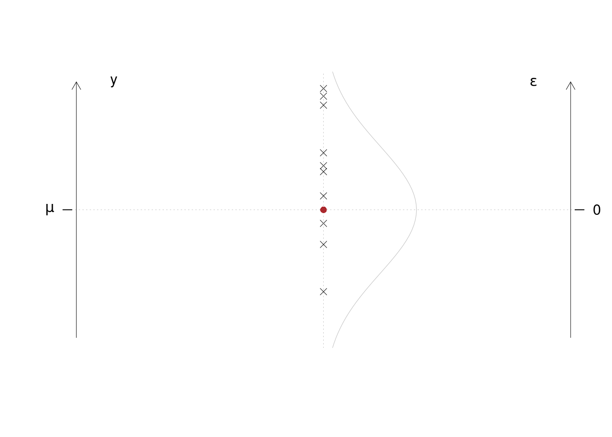
\[Y_i\sim N(\mu,\sigma_\varepsilon^2)~~\text{ è equivalente a dire }~~Y_i=\mu+\varepsilon_i,~~\varepsilon_i\sim N(0,\sigma_\varepsilon^2)\]
17.1.1 Esempi
Esempio 17.1 Stiamo studiando la produttività media di un ettaro coltivato ad una certa varietà di riso: per prima cosa piantiamo 10 ettari non trattati con fertilizzante (\(X=0\)) con questa varietà e calcoliamo i quintali per ettaro, otteniamo (28.22, 27.46, 28.89, 28.6, 29.64, 28.69, 26.72, 27.79, 29.9, 29.78)
\[Y_i=\mu_{(X=0)}+\varepsilon_i\qquad\varepsilon_i\sim N(0,\sigma_\varepsilon^2)\]
Stimiamo \[\hat\mu_{(X=0)}=\frac 1 n\sum_{i=1}^n y_i=28.569\] e \[\begin{eqnarray*} \hat\sigma_\varepsilon^2&=&\frac 1 n\sum_{i=1}^n y_i^2-\hat\mu_{(X=0)}^2\\ &=&\frac 1 {10}(28.22^2+27.46^2+28.89^2 +...+ 29.9^2+29.78^2)-28.569^2\\ &=&0.9881\\ \hat\sigma_\varepsilon &=& 0.994 \end{eqnarray*}\]
Costruiamo dapprima un intervallo di confidenza sui dati Correggiamo \(\hat\sigma_\varepsilon^2\)
\[\begin{eqnarray*} S_{(X=0)}^2&=&\frac{n}{n-1}\hat\sigma_{(X=0)}^2\\ &=&\frac{10}{10-1}\cdot0.9881\\ &=&1.0983\\ S_{(X=0)}&=&1.048 \end{eqnarray*}\]
L’intervallo di confidenza al 95% per \(\mu_{(X=0)}\) è \[\hat\mu_{(X=0)}\pm t_{n-1;\alpha/2}\frac S{\sqrt n}=28.569\pm 2.2622\frac{1.048}{10}= (27.8193;29.3187)\]
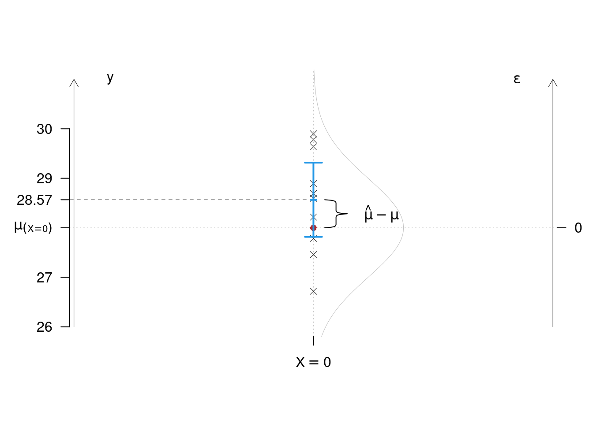
E quindi potremmo proporre la previsione: quanta produzione ci aspetteremo sul prossimo ettaro che pianteremo con quella varietà di riso? \[\begin{eqnarray*} E(\hat Y_{11})&=&E(\hat\mu_{(X=0)}+\varepsilon_{11})\\ &=&28.569+E(\varepsilon_{11})\\ &=&28.569\qquad \text{poiché } \varepsilon_{11}\sim N\left(0,\sigma_\varepsilon^2\right) \end{eqnarray*}\]
È una previsione corretta? \[E(\hat Y_{11})=E(\hat\mu+\varepsilon_{11})=E(\hat\mu)+E(\varepsilon_{11})=\mu+0=\mu\]
L’errore di previsione stimato è \(S_{(X=0)}=1.048\).
Esempio 17.2 Supponiamo di aver piantato altri 10 ettari di questa varietà ma su terreni trattati con 1.13 hg (\(X=1.13\)) di concime azotato per ettaro e osserviamo (28.16, 30.38, 27.74, 29.07, 30.71, 28.4, 28.53, 28.36, 28.71, 29.14) \[Y_i=\mu_{(X=1.13)}+\varepsilon_i\qquad\varepsilon_i\sim N(0,\sigma_\varepsilon^2)\]
Stimiamo \[\hat\mu_{(X=1.13)}=\frac 1 n\sum_{i=1}^n y_i=28.92\] e \[\begin{eqnarray*} \hat\sigma_\varepsilon^2&=&\frac 1 n\sum_{i=1}^n y_i^2-\hat\mu_{(X=0)}^2\\ &=&\frac 1 {10}(28.16^2+30.38^2+27.74^2 +...+ 28.71^2+29.14^2)-28.92^2\\ &=&0.8157\\ \hat\sigma_\varepsilon &=& 0.9032 \end{eqnarray*}\]
Correggiamo \(\hat\sigma_\varepsilon^2\)
\[\begin{eqnarray*} S_{(X=1.13)}^2&=&\frac{n}{n-1}\hat\sigma_{(X=0)}^2\\ &=&\frac{10}{10-1}\cdot0.8157\\ &=&0.9063\\ S_{(X=1.3)}&=&0.952 \end{eqnarray*}\]
L’intervallo di confidenza al 95% per \(\mu_{(X=1.13)}\) è \[\hat\mu_{(X=1.13)}\pm t_{n-1;\alpha/2}\frac S{\sqrt n}=28.92\pm 2.2622\frac{0.952}{10}= (28.239;29.601)\]
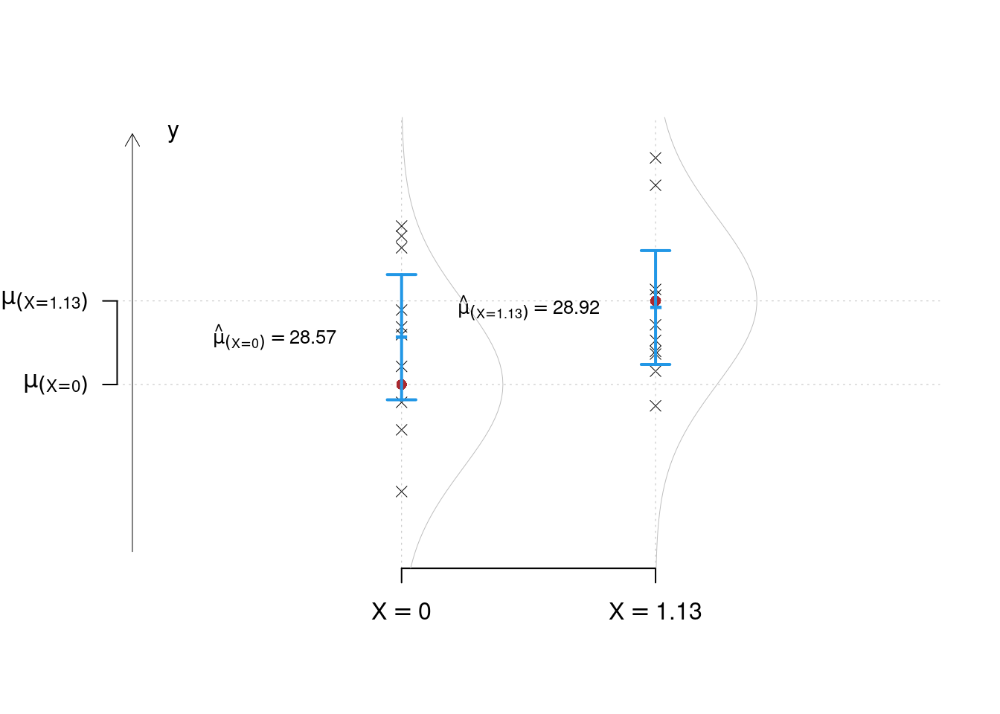
Se mettiamo a test, otteniamo
Test \(T\) per due medie, (omogeneità)
\(\fbox{A}\) FORMULAZIONE DELLE IPOTESI
\[\begin{cases} H_0: \mu_\text{$(X=1.13)$} = \mu_\text{$(X=0)$} \\ H_1: \mu_\text{$(X=1.13)$} > \mu_\text{$(X=0)$} \end{cases}\]
\(\fbox{B}\) SCELTA E CALCOLO STATISTICA-TEST, \(T\)
L’ipotesi è di omogeneità e quindi calcoliamo:\[ S_p^2=\frac{n_\text{ $(X=1.13)$ }\hat\sigma^2_\text{ $(X=1.13)$ }+n_\text{ $(X=0)$ }\hat\sigma^2_\text{ $(X=0)$ }}{n_\text{ $(X=1.13)$ }+n_\text{ $(X=0)$ }-2} = \frac{ 10 \cdot 0.9032 ^2+ 10 \cdot 0.994 ^2}{ 10 + 10 -2}= 1.002 \]
\[\begin{eqnarray*} \frac{\hat\mu_\text{ $(X=1.13)$ } - \hat\mu_\text{ $(X=0)$ }} {\sqrt{\frac {S^2_p}{n_\text{ $(X=1.13)$ }}+\frac {S^2_p}{n_\text{ $(X=0)$ }}}}&\sim&t_{n_\text{ $(X=1.13)$ }+n_\text{ $(X=0)$ }-2}\\ t_{\text{obs}} &=& \frac{ ( 28.92 - 28.57 )} {\sqrt{\frac{ 0.9064 }{ 10 }+\frac{ 1.098 }{ 10 }}} = 0.784 \, . \end{eqnarray*}\]
\(\fbox{C}\) CONCLUSIONE
La siginficatitività è \(\alpha=0.05\), dalle tavole osserviamo \(t_{20-2;0.05}=1.7341\).
Essendo \(t_\text{obs}=0.784<t_{20-2;0.05}=1.7341\) allora non rifiuto \(H_0\) al 5%.
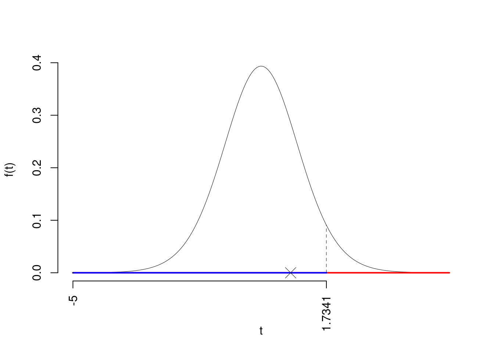
Il \(p_{\text{value}}\) è
\[ p_{\text{value}} = P(T_{20-2}>0.78)=0.221609 \]
Attenzione il calcolo del \(p_\text{value}\) con la \(T\) è puramente illustrativo e non può essere riprodotto senza una calcolatrice statistica adeguata.\[ 0.1 < p_\text{value}= 0.221609 \leq 1 \]
Esempio 17.3 Supponiamo di aver piantato altri 10 ettari di questa varietà ma su terreni trattati con 2.84 hg (\(X=2.84\)) di concime azotato per ettaro e osserviamo (29.03, 32.09, 29.56, 29.59, 28.52, 30.24, 30.2, 29.89, 30.41, 30.94) \[Y_i=\mu_{(X=2.84)}+\varepsilon_i\qquad\varepsilon_i\sim N(0,\sigma_\varepsilon^2)\]
Stimiamo \[\hat\mu_{(X=2.84)}=\frac 1 n\sum_{i=1}^n y_i=30.047\] e \[\begin{eqnarray*} \hat\sigma_{(X=2.84)}^2&=&\frac 1 n\sum_{i=1}^n y_i^2-\hat\mu_{(X=2.84)}^2\\ &=&\frac 1 {10}(29.03^2+32.09^2+29.56^2 +...+ 30.41^2+30.94^2)-30.047^2\\ &=&0.9\\ \hat\sigma_{(X=2.84)} &=& 0.9487 \end{eqnarray*}\] infine
\[\begin{eqnarray*} S_{(X=2.84)}^2&=&\frac{n}{n-1}\hat\sigma_{(X=2.84)}^2\\ &=&\frac{10}{10-1}\cdot0.9\\ &=&1\\ S_{(X=2.84)}&=&1 \end{eqnarray*}\]
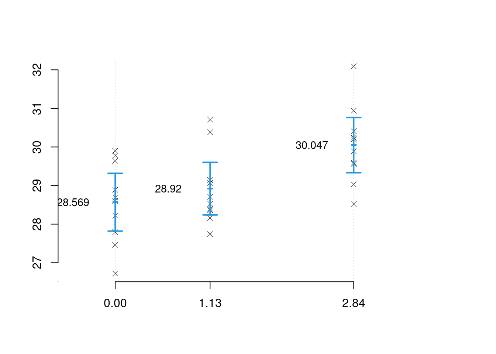
problema 1: abbiamo tre stime di \(\mu\) e tre stime di \(\sigma\) ottenute come se i campioni fossero separati. Non abbiamo tenuto conto della natura metrica della \(X\).
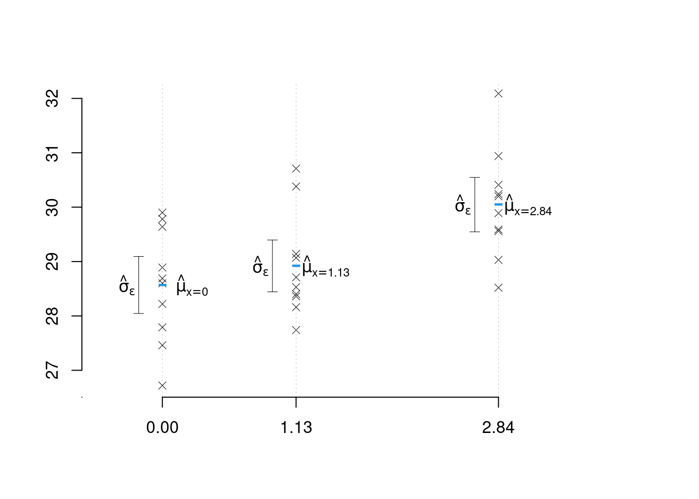
problema 2: alla luce di questi dati cosa possiamo dire sulla produzione media se usassimo 1.9 hg di concime per ettaro? Potremmo proporre di congiungere le medie con una spezzata
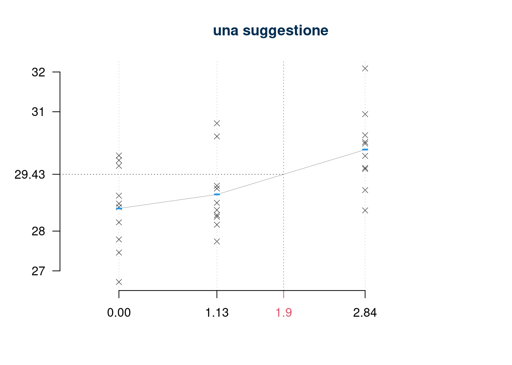
Esempio 17.4 problema 3: Dobbiamo studiare un nuova varietà di riso, ma il budget è inferiore. osserviamo 10 ettari
| \(X=\) Fertilizzante | 0.00 | 0.226 | 0.452 | 0.678 | 0.904 | 1.13 | 1.356 | 1.582 | 1.808 | 2.034 |
| \(Y=\) Raccolto | 26.87 | 27.869 | 27.035 | 29.651 | 28.571 | 27.61 | 29.099 | 29.536 | 29.558 | 28.863 |
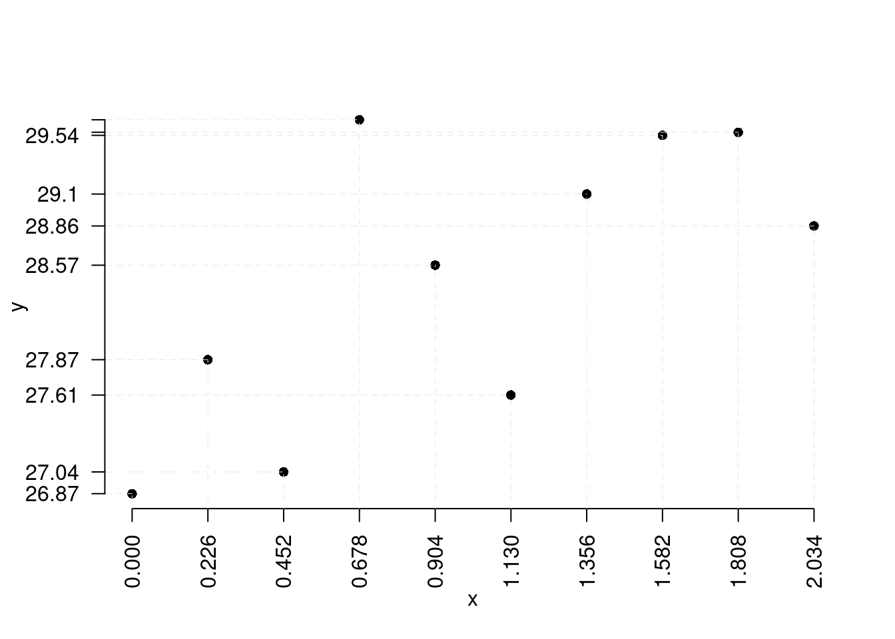
La previsione sembra più difficile, la suggestione di prima non sembra funzionare
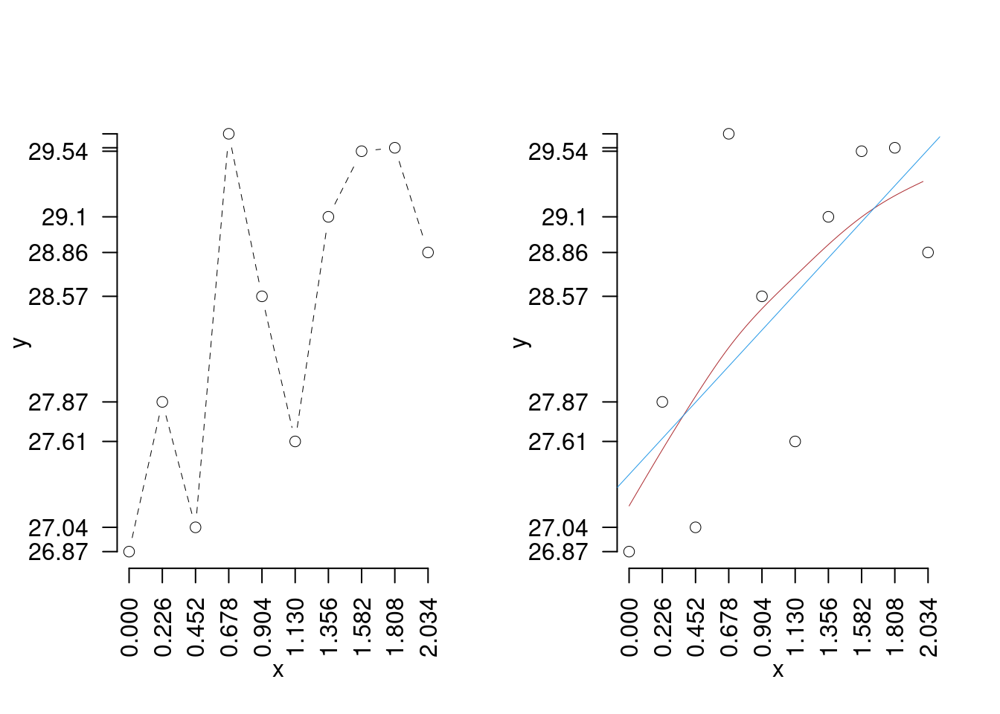
17.2 Il modello di regressione
Vogliamo modellare la linea delle medie. Ci aspetteremmo una linea che passi tra i punti che che sia, per ogni \(x\) dato, il valore atteso di \(Y\) condizionato a quella \(x\). Cioè abbiamo bisogno di un modello per la media di \(Y\) per un dato \(X\) \[E(Y_i|X=x_i)=f(x_i)\]
E si legge che \(Y\), in media, condizionato ad \(X=x\) vale \(f(x)\), dove \(f\) è una funzione da scegliere. L’idea di base è che \[y_i=f(x_i)+\varepsilon_i\] la \(y\) osservata in corrispondenza della \(x\) è pari ad \(f(x)\) a meno di un errore casuale. Dove si assume che l’errore abbia media zero \[E(\varepsilon_i)=0\]
e varianza costante \[V(\varepsilon_i)=\sigma^2_{\varepsilon}, ~\forall i\]
Qui di seguito un paio di esempi grafici
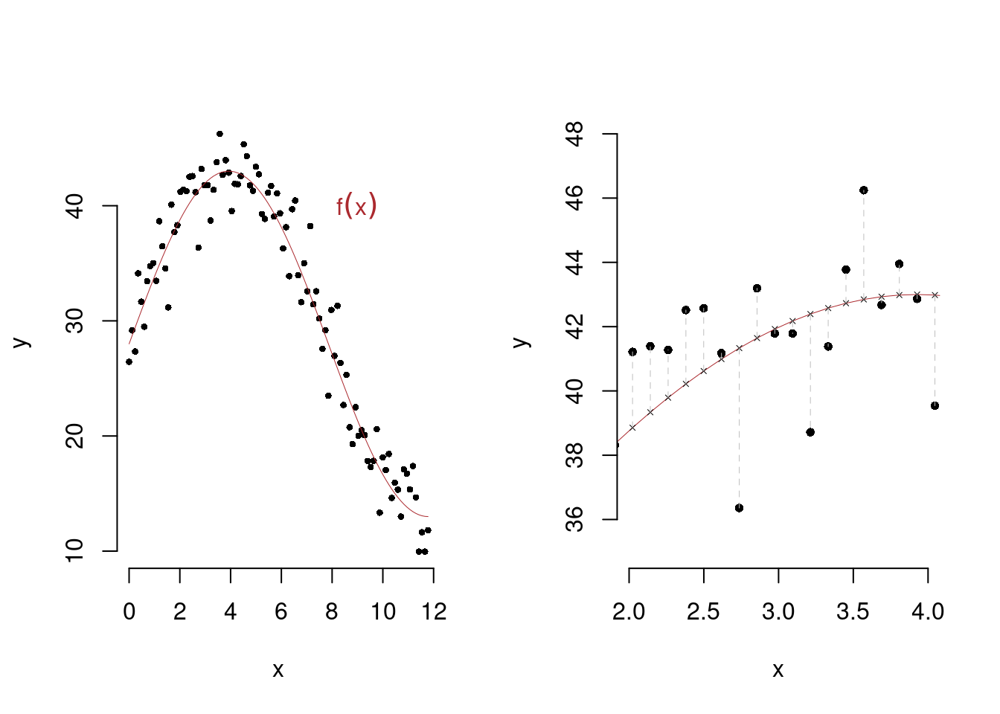
17.3 La Regressione Lineare
Tra le tante \(f\) limitiamo l’attenzione alle funzioni lineari \[y_i=\beta_0+\beta_1x_i+\varepsilon_i\]
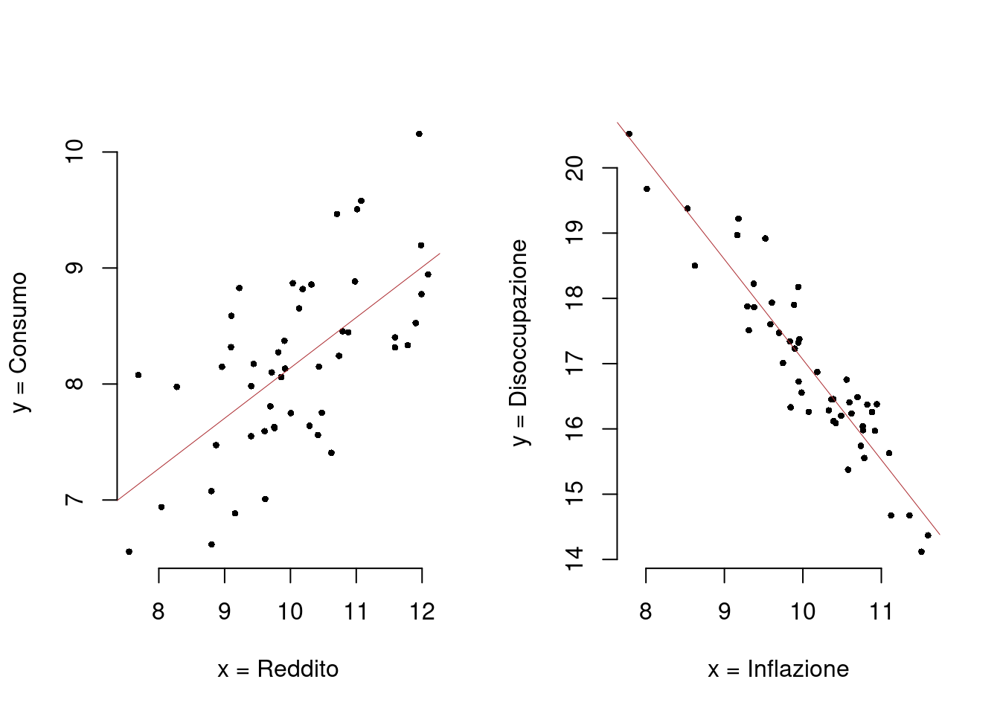
17.3.1 Il modello di regressione lineare semplice
Il modello di regressione (lineare semplice) è \[y_i=\beta_0+\beta_1x_i+\varepsilon_i,\qquad E(\varepsilon_i)=0,~V(\varepsilon_i)=\sigma^2_{\varepsilon_i}\]
Le variabili sono chiamate:
- \(y\) dipendente, endogena, risposta, ecc.
- \(x\) indipendente, esogena, stimolo, ecc.
- \(\varepsilon\) è chiamato, residuo, o errore
I parametri di popolazione sono 3: \(\beta_0\), \(\beta_1\) e \(\sigma^2_\varepsilon\)
- \(\beta_0\) è l’intercetta della retta. \(\beta_0\) rappresenta la media di \(y\) quando \(x=0\), non sempre ha significato fenomenico
- \(\beta_1\) è il coefficiente angolare. \(\beta_1\) rappresenta quanto la media di \(y\) aumenta all’aumentare unitario della \(x\).
- \(\sigma^2_\varepsilon\) è la varianza dell’errore \(\varepsilon\). \(\sigma^2_\varepsilon\) rappresenta la variabilità dei punti intorno alla retta.
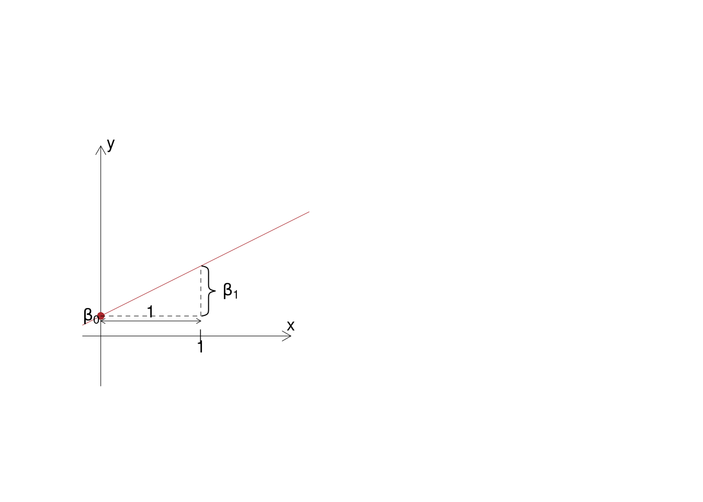
17.3.2 La Storia del Metodo
https://en.wikipedia.org/wiki/Regression_toward_the_mean
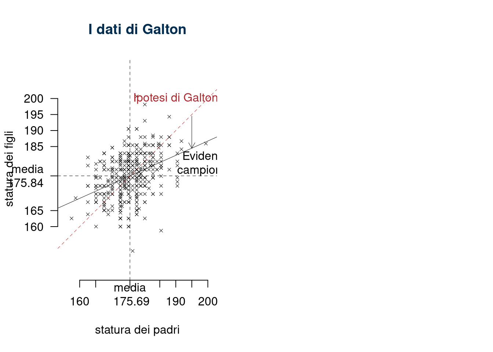
L’ipotesi di Galton: \[ y_i = x_i +\varepsilon_i \] fu smentita dai dati \[ y_i = 97.18+0.45\cdot x_i +\varepsilon_i \]
17.3.3 Gli assunti del modello di regressione
- Dati \((x_1,y_1),...,(x_n,y_n)\), \(n\) coppie di punti, si assume che \[y_i=\beta_0+\beta_1x_i+\varepsilon_i\]
- Il valore atteso dell’errore è nullo \[E(\varepsilon_i)=0\]
- Omoschedasticità \[V(\varepsilon_{i}) = \sigma_\varepsilon^2,\qquad \text{costante }\forall i\]
- Indipendenza dei residui \[\varepsilon_i\text{ è indipendente da }\varepsilon_j~~\forall i\neq j\]
- Indipendenza tra i residui e la \(X\) \[X_i\text{ è indipendente da }\varepsilon_i~~\forall i\]
- Esogeneità della \(X\): la distribuzione su \(X\) non è oggetto di inferenza
- Normalità dei residui \[\varepsilon_i\sim N(0,\sigma^2_\varepsilon)\]
Assunto 0 Dati \((x_1,y_1),...,(x_n,y_n)\), \(n\) coppie di punti, si assume che \[y_i=\beta_0+\beta_1x_i+\varepsilon_i\]
Situazioni in cui l’assunto 0 è violato
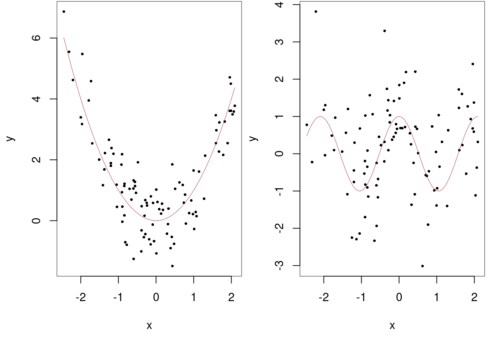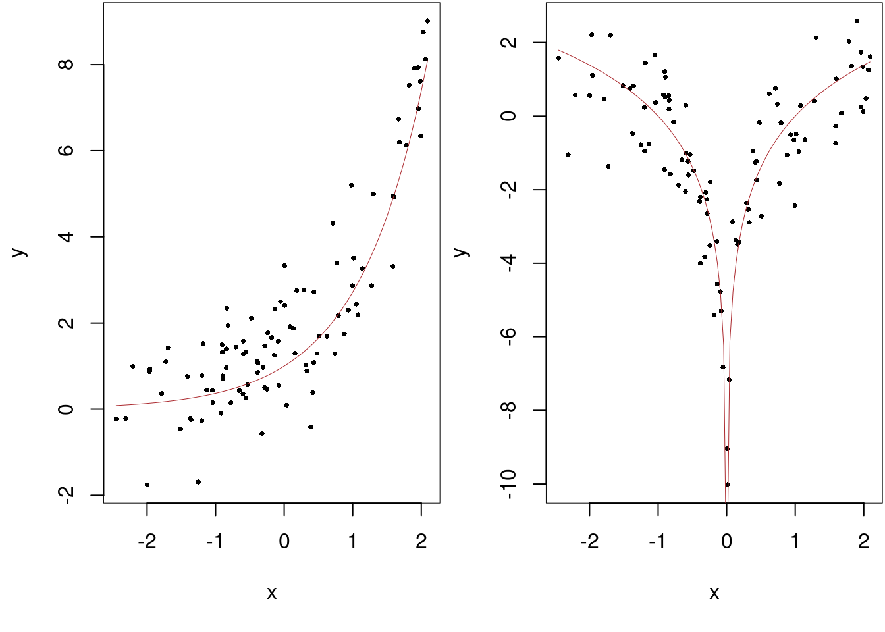
Assunto 1, il valore atteso dell’errore è nullo
\[E(\varepsilon_i)=0\]
Inverificabile, se per esempio \[E(\varepsilon_i)=+1,~~\forall i,~ E(Y_i|x_i)=\beta_0+\beta_1x_i+E(\varepsilon_i)=\beta_0+\beta_1x_i+1\]
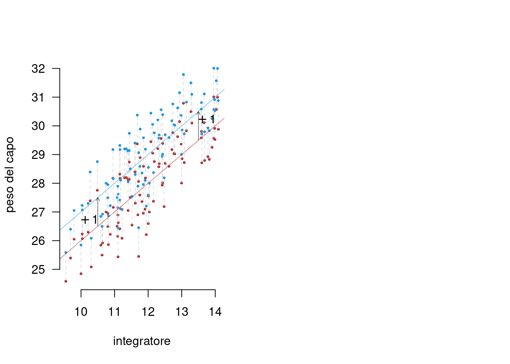
Assunti 3. e 6. Omoschedasticità e Indipendenza tra i residui e la \(X\)
\[V(\varepsilon_{i}) = \sigma_\varepsilon^2,\qquad \text{costante }\forall i\] \[X_i\text{ è indipendente da }\varepsilon_i~~\forall i\]
La varianza non cambia con le osservazioni
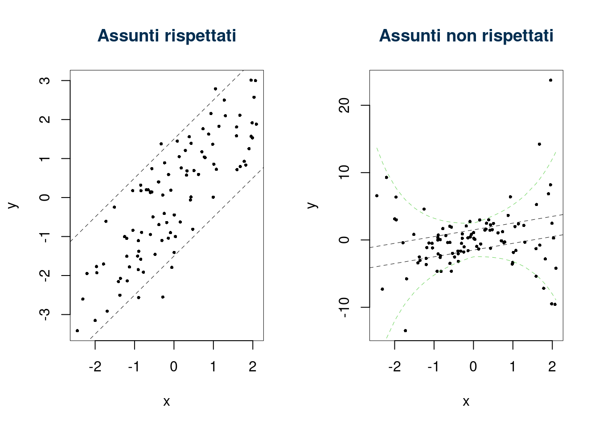 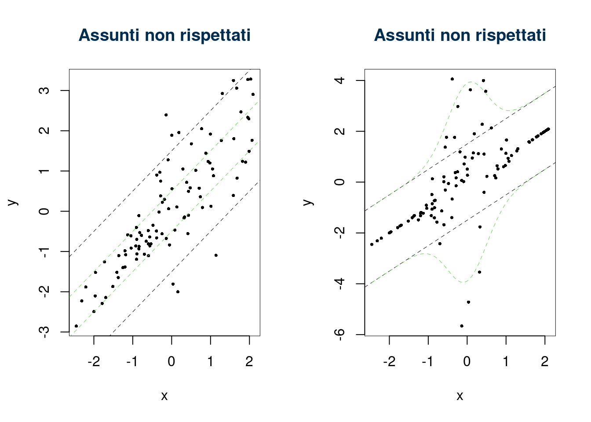
4. Indipendenza dei residui
\[\varepsilon_i\text{ è indipendente da }\varepsilon_j~~\forall i\neq j\]
L’assunto vine tipicamente violato nelle serie temporali
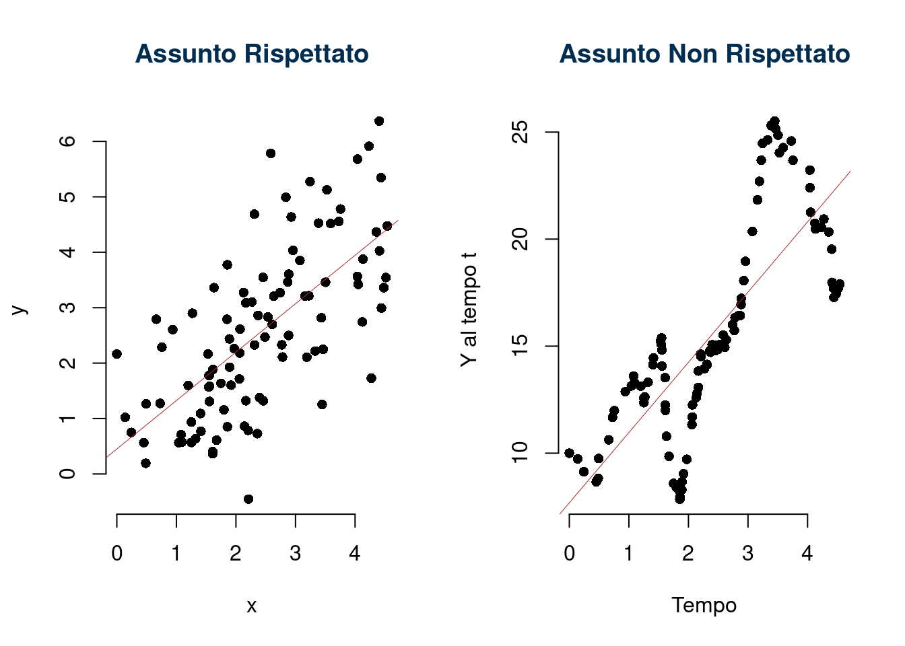
5. Esogeneità della \(X\): la distribuzione su \(X\) non è oggetto di inferenza. In contesto di sperimentazione la \(X\) viene fissata dal ricercatore. In un contesto di dati sul campo la \(X\) non può essere fissata, ma viene usata come se fosse fissata. L’obiettivo di ricerca rimane la \(Y\) e la relazione tra \(X\) ed \(Y\), non la distribuzione di \(X\).
6. Normalità dei residui Gli errori sono normalmente distribuiti \[\varepsilon_i\sim N\left(0,\sigma_\varepsilon^2\right)\]
Essendo \[Y_i = \beta_0+\beta_1x_i+\varepsilon_i, ~~\varepsilon_i\sim N\left(0,\sigma_\varepsilon^2\right)\]
allora, dalle proprietà delle normali \[Y_i\sim N\left(\beta_0+\beta_1x_i,\sigma_\varepsilon^2\right)\]
\(Y_i\) è normale con media \(\beta_0+\beta_1x_i\) e varianza \(\sigma_\varepsilon^2\)
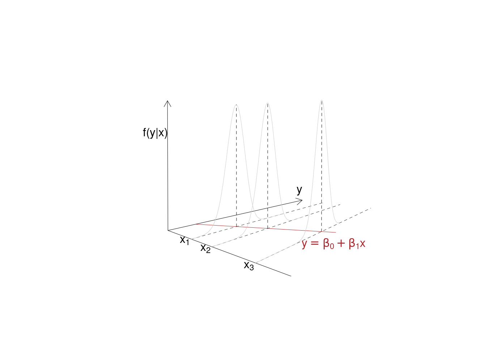
17.3.4 Il metodo dei minimi quadrati
È un metodo di stima per \(\beta_0\) e \(\beta_1\), si può dimostrare che, in virtù dell’assunto 6. (la normalità dei residui) il metodo dei minimi quadrati produce le stime di massima verosimiglianza. Svilupperemo la teoria attraverso un esempio su 4 punti.
| \(i\) | \(x_i\) | \(y_i\) |
|---|---|---|
| 1 | 0 | 2.0 |
| 2 | 1 | 3.5 |
| 3 | 2 | 2.5 |
| 4 | 3 | 4.0 |
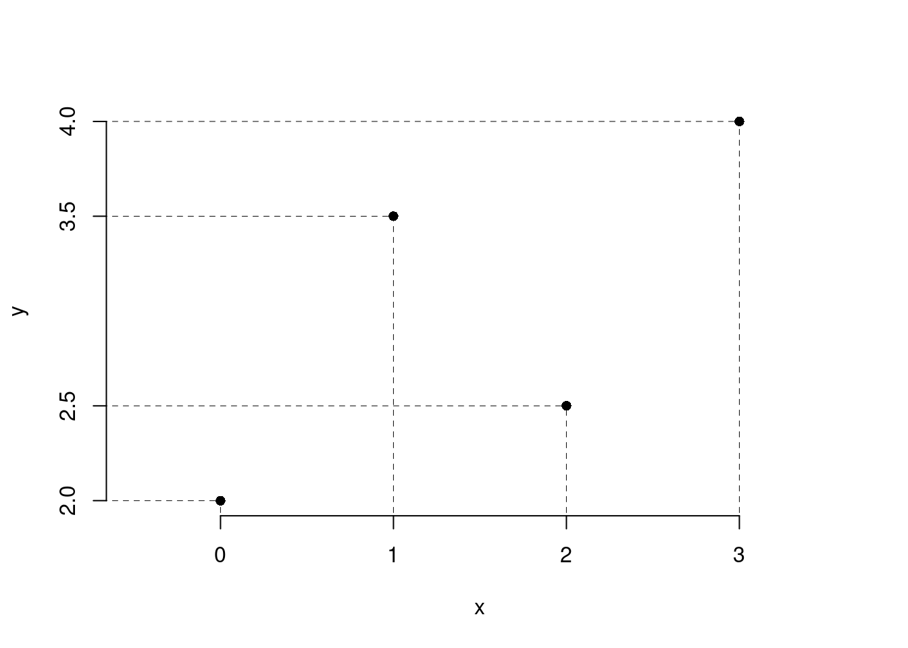
17.3.5 La distanza di una retta dai punti (il metodo dei minimi quadrati)
Si tratta di cercare la retta che rende minima la somma dei quadrati delle distanza della retta misurate nella scala di misura della \(y\). Per ogni retta candidata \((\beta_0^*,\beta_1^*)\), costruiamo la previsione \[\hat y_i^*=\beta_0^*+\beta_1^*x_i\] e quindi i residui \[\hat\varepsilon_i^*=y_i-\hat y_i\]
Il criterio dei minimi quadrati è \[G(\beta_0^*,\beta_1^*)=\sum_{i=1}^n ({\hat\varepsilon_i^*})^{2} =\sum_{i=1}^n(y_i-\hat y_i^*)^2=\sum_{i=1}^n(y_i-(\beta_0^*+\beta_1^*x_i))^2\]
La retta dei minimi quadrati è quella coppia di \(\hat\beta_0\) e \(\hat\beta_1\) tali che \[G(\hat\beta_0,\hat\beta_1)<G(\beta_0^*,\beta_1^*),~~\forall(\beta_0^*,\beta_1^*)\neq(\hat\beta_0,\hat\beta_1)\]
Se, per esempio, scegliessimo \(\beta_0^*=2.2,~\beta_1^*=0.36\), otterremmo
| \(i\) | \(x_i\) | \(y_i\) | \(\hat y_i^*=\beta_0^*+\beta_1^*x_i\) | \(\hat\varepsilon_i^*=y_i-\hat y^*\) | \(({\hat\varepsilon_i^*})^2\) |
|---|---|---|---|---|---|
| 1 | 0 | 2.0 | 2.20 | -0.20 | 0.0400 |
| 2 | 1 | 3.5 | 2.56 | 0.94 | 0.8836 |
| 3 | 2 | 2.5 | 2.92 | -0.42 | 0.1764 |
| 4 | 3 | 4.0 | 3.28 | 0.72 | 0.5184 |
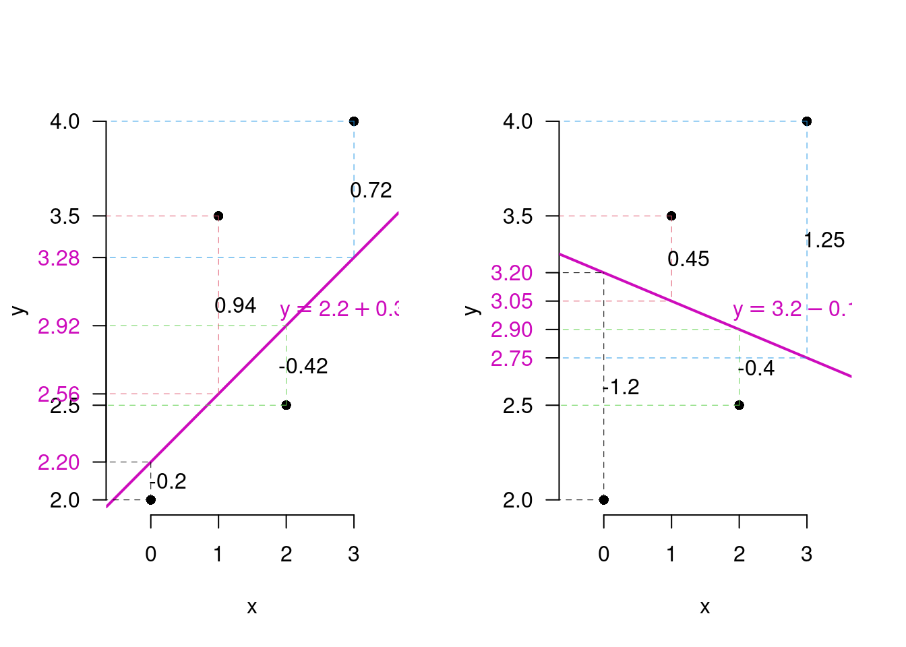
| \(i\) | \(x_i\) | \(y_i\) | \(\hat y_i^*=\beta_0^*+\beta_1^*x_i\) | \(\hat\varepsilon_i^*=y_i-\hat y^*\) | \(({\hat\varepsilon_i^*})^2\) |
|---|---|---|---|---|---|
| 1 | 0 | 2.0 | 3.20 | -1.20 | 1.4400 |
| 2 | 1 | 3.5 | 3.05 | 0.45 | 0.2025 |
| 3 | 2 | 2.5 | 2.90 | -0.40 | 0.1600 |
| 4 | 3 | 4.0 | 2.75 | 1.25 | 1.5625 |
\[G(2.2,0.36)=3.365\]
Se invece scegliessimo \(\beta_0^*=3.2,~\beta_1^*=-1.5\), otterremmo
\[G(3.2,-1.15)=3.365\]
Siccome \[G(2.2,0.36)=1.6184<G(3.2,-1.15)=3.365\] allora diremo che la retta \(\beta_0^*=2.2,~\beta_1^*=0.36\) è più vicina, nel senso dei minimi quadrati, della retta \(\beta_0^*=3.2,~\beta_1^*=-1.5\).
17.3.6 Soluzioni dei minimi quadrati
La retta dei minimi quadrati è quella coppia di \(\hat\beta_0\) e \(\hat\beta_1\) tali che \[G(\hat\beta_0,\hat\beta_1)<G(\beta_0,\beta_1),~~\forall(\beta_0,\beta_1)\neq(\hat\beta_0,\hat\beta_1)\] ovvero \[\begin{eqnarray*} (\hat\beta_0,\hat\beta_1)=\operatorname*{argmin}_{(\beta_0,\beta_1)\in\mathbb{R}^2}G(\beta_0,\beta_1) \end{eqnarray*}\]
Proprietà 17.1 (Stimatori dei Minimi Quadrati) Gli stimatori dei minimi quadrati \(\hat\beta_0\) e \(\hat\beta_1\) sono \[\begin{eqnarray*} \hat\beta_1 &=& \frac{\frac 1 n\sum_{i=1}^n{(x_i-\bar x)(y_i-\bar y)}}{\frac 1 n\sum_{i=1}^n(x_i-\bar x)^2}=\frac{\text{ cov}(x,y)}{\hat\sigma^2_X}\\ \hat\beta_0 &=&\bar y -\hat\beta_1\bar x \end{eqnarray*}\] dove \[\bar y = \frac 1 n\sum_{i=1}^n y_i,\qquad \bar x=\frac 1 n \sum_{i=1}^n x_i\] e \[ \text{ cov}(x,y) = \frac 1 n\sum_{i=1}^n(x_i-\bar x)(y_i-\bar y) \]
Dimostrazione. \[\begin{eqnarray*} G(\beta_{0}, \beta_{1}) &=& \frac 1n \sum_{i=1}^{n} \left( y_{i} - (\beta_{0} + \beta_{1} x_{i}) \right)^2\\ \frac{\partial G(\beta_{0}, \beta_{1})} {\partial \beta_{0}} &=& -\frac{2} {n} \sum_{i=1}^n \left( y_{i} - (\beta_{0} + \beta_{1} x_{i}) \right)\\ &=& -\frac{2} n\left(\sum_{i=1}^ny_i-\sum_{i=1}^n\beta_0-\sum_{i=1}^n\beta_1 x_i\right) \\ &=&-\frac{2} n\left(n\bar y-n\beta_0-n\beta_1\bar x\right) \\ &=&-2\left(\bar y-\beta_0-\beta_1\bar x\right) \\ \frac{\partial G(\beta_{0}, \beta_{1})} {\partial \beta_{1}} &=& -\frac{2} {n} \sum_{i=1}^n x_i\left( y_{i} - (\beta_{0} + \beta_{1} x_{i}) \right)\\ &=& -\frac{2} {n} \left(\sum_{i=1}^n x_i y_{i}\right) - \left(\sum_{i=1}^n\beta_{0}x_i\right) - \left(\sum_{i=1}^n\beta_{1} x_{i}^2\right)\\ &=& -2 \left(\left(\frac 1n\sum_{i=1}^n x_i y_{i}\right) - \beta_{0}\bar x - \beta_{1}\left(\frac 1n\sum_{i=1}^n x^2_{i}\right)\right)\\ \end{eqnarray*}\]
E otteniamo il sistema di equazioni normali
\[ \left\{ \begin{array}{rl} \frac{\partial G(\beta_{0}, \beta_{1})} {\partial \beta_{0}} &= 0 \\ \frac{\partial G(\beta_{0}, \beta_{1})} {\partial \beta_{1}} &= 0 \end{array}\right. \]
Dividendo per 2 e cambiando di segno, si ha \[ \left\{ \begin{array}{rl} \left(\bar y-\beta_0-\beta_1\bar x\right) &= 0\\ \left(\frac 1n\sum_{i=1}^n x_i y_{i}\right) - \beta_{0}\bar x - \beta_{1}\left(\frac 1n\sum_{i=1}^n x^2_{i}\right) &= 0 \end{array}\right. \] da cui \[ \hat\beta_0 = \bar y- \beta_{1} \bar{x} \]
E sostituiamo
\[\begin{eqnarray*} \left(\frac 1n\sum_{i=1}^n x_i y_{i}\right) - (\bar y - \beta_1\bar x)\bar x - \beta_{1}\left(\frac 1n\sum_{i=1}^n x^2_{i}\right) &=& 0\\ \beta_1\left(\frac 1n\sum_{i=1}^n x^2_{i}-\bar x^2\right) &=& \frac 1n\sum_{i=1}^n x_i y_{i} - \bar x\cdot\bar y\\ \hat\beta_1 &=& \frac{\frac 1n\sum_{i=1}^n x_i y_{i} - \bar x\cdot\bar y}{\frac 1n\sum_{i=1}^n x^2_{i}-\bar x^2} \end{eqnarray*}\]
Siccome \[\begin{eqnarray*} \text{ cov}(x,y) &=& \frac 1 n\sum_{i=1}^n(x_i-\bar x)(y_i-\bar y)\\ &=& \frac 1 n\sum_{i=1}^n(x_i~y_i - y_i~\bar x - x_i~\bar y + \bar x\bar y)\\ &=& \frac 1 n\sum_{i=1}^n x_i~y_i - \frac {\bar x} n\sum_{i=1}^n y_i - \frac {\bar y} n\sum_{i=1}^nx_i + \frac 1 n\sum_{i=1}^n\bar x\bar y\\ &=& \frac 1 n\sum_{i=1}^n x_i~y_i-\bar x\bar y-\bar x\bar y+-\bar x\bar y\\ &=& \frac 1 n\sum_{i=1}^n x_i~y_i-\bar x\bar y \end{eqnarray*}\]
Concludendo la prova.
17.4 La covarianza
Definizione 17.1 La Covarianza \(\text{cov}(x,y)\) tra due variabili \(x\) e \(y\) è una misura della loro covariazione \[\text{cov}(x,y)=\frac 1 n\sum_{i=1}^n{(x_i-\bar x)(y_i-\bar y)}\]
La covarianza è la media degli scarti incrociati dalla media Come per la varianza esiste una formula semplificata:
Proprietà 17.2 \[\text{cov}(x,y)=\frac 1 n\sum_{i=1}^nx_i~y_i-\bar x\bar y\]
La covarianza è la media dei prodotti degli scarti dalla media può essere riletta come la media dei prodotti meno il prodotto delle medie.
17.4.1 Calcolo della covarianza
Nel caso in esame \[\bar x=\frac 1 4(0+1+2+3)=\frac{6}{4}=1.5\] \[\bar y=\frac 1 4(2+3.5+2.5+4)=\frac{12}{4}=3\]
Per la covarianza: \[\begin{eqnarray*} \text{cov}(x,y)&=&\frac 1 4\Big(( 0-1.5 ) ( 2-3 )+( 1-1.5 ) ( 3.5-3 )+( 2-1.5 ) ( 2.5-3 )+( 3-1.5 ) ( 4-3 )\Big)\\ &=& \frac 1 4(0 \times 2+1 \times 3.5+2 \times 2.5+3 \times 4)-1.5\times3\\ &=& \frac 1 4(20.5)-4.5\\ &=& 0.625 \end{eqnarray*}\]
17.4.2 Interpretazione della Covarianza
La covarianza non è direttamente leggibile perché ha un’unità di misura mista, prodotto della unità di misura della \(x\) e quella della \(y\).
È interessante il segno della covarianza perché indica la pendenza della retta se la covarianza è positiva c’è concordanza dei segni, ad \(x\) maggiori del loro baricentro (\((x_i-\bar x)>0\)) corrispondo, in media, \(y\) maggiori del loro baricentro \((y_i-\bar y)>0\). Mentre ad \(x\) minori del loro baricentro (\((x_i-\bar x)<0\)) corrispondo, in media, \(y\) minori del loro baricentro \((y_i-\bar y)<0\). Se invece la covarianza è negativa c’è discordanza dei segni, cioè ad \(x\) maggiori del loro baricentro (\((x_i-\bar x)>0\)) corrispondo, in media, \(y\) minori del loro baricentro \((y_i-\bar y)<0\). Mentre ad \(x\) minori del loro baricentro (\((x_i-\bar x)<0\)) corrispondo, in media, \(y\) maggiori del loro baricentro \((y_i-\bar y)>0\).
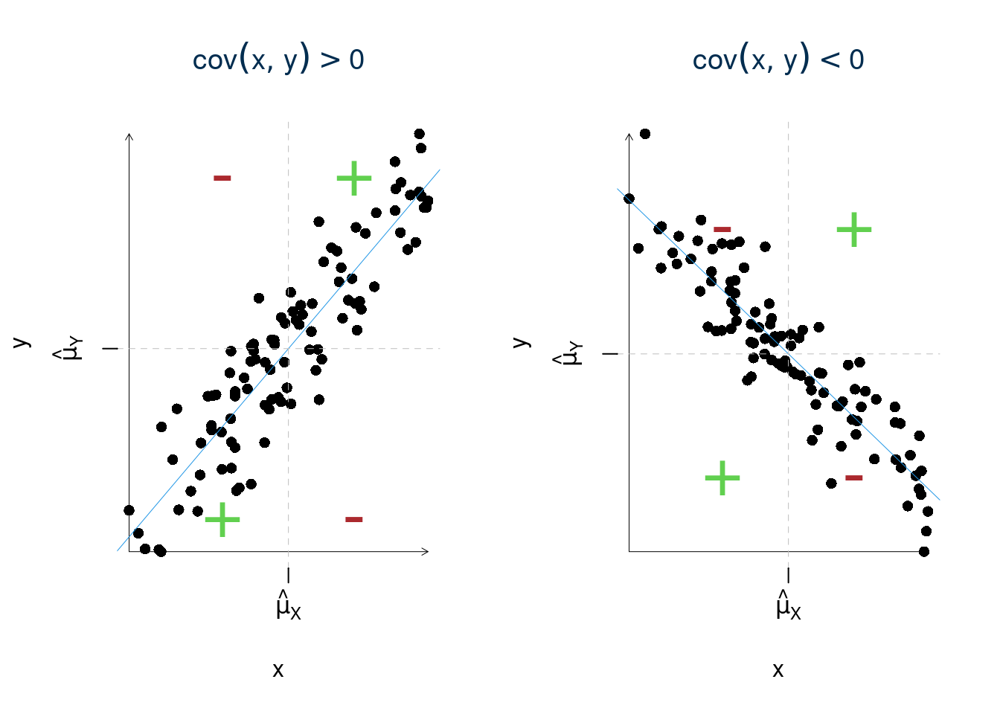 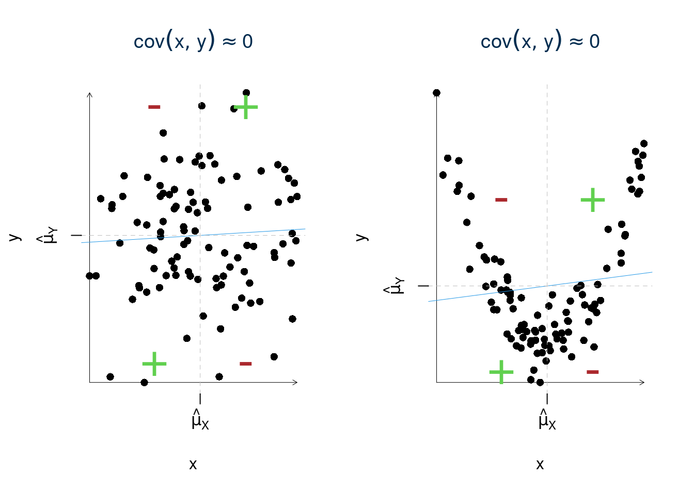
17.4.3 Altre proprietà della covarianza
Simmetria \[\text{cov}(x,y)=\text{cov}(y,x)\] la dimostrazione è immediata \[\text{cov}(x,y)=\frac 1 n\sum_{i=1}^n{(x_i-\bar x)(y_i-\bar y)}=\frac 1 n\sum_{i=1}^n{(y_i-\bar y)(x_i-\bar x)}=\text{cov}(y,x)\]
Caso particolare \[\text{cov}(x,x)=\frac 1 n\sum_{i=1}^n{(x_i-\bar x)(x_i-\bar x)}=\frac 1 n\sum_{i=1}^n{(x_i-\bar x)^2}=\hat\sigma^2_X\] la covarianza di una variabile con se stessa è la varianza. La covarianza estende il concetto di varianza quando le variabili sono due.
17.4.4 Campo di variazione della covarianza
\[-\hat\sigma_X\hat\sigma_Y\leq\text{cov}(x,y)\leq + \hat\sigma_X\hat\sigma_Y\]
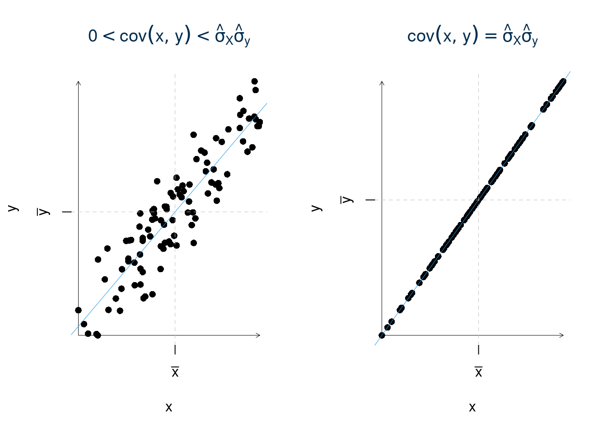
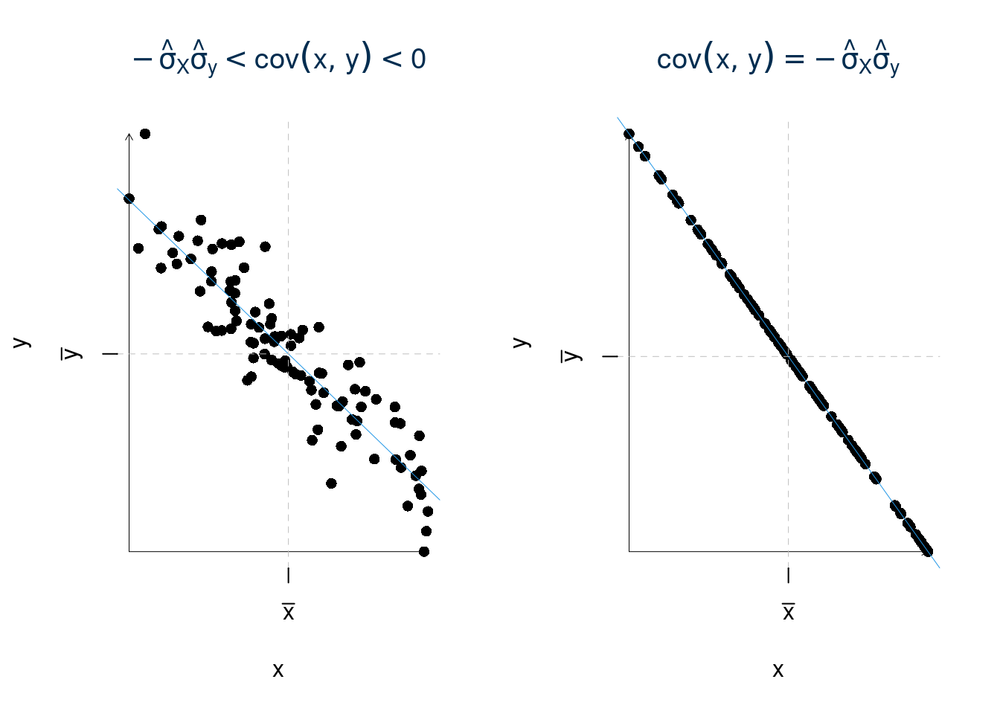
Stimiamo di \(\sigma_X\) e \(\sigma_Y\)
Calcolo di \(\hat\sigma_X^2\) \[\begin{eqnarray*} \hat\sigma_X^2&=&\frac 1 n\sum_{i=1}^n x_i^2-\hat\mu_X^2\\ &=&\frac 1 {4}(0^2+1^2+2^2+3^2)-1.5^2\\ &=&1.25\\ \hat\sigma_X &=& 1.118 \end{eqnarray*}\]
Calcolo di \(\hat\sigma_X^2\) \[\begin{eqnarray*} \hat\sigma_Y^2&=&\frac 1 n\sum_{i=1}^n y_i^2-\hat\mu_Y^2\\ &=&\frac 1 {4}(2^2+3.5^2+2.5^2+4^2)-3^2\\ &=&0.625\\ \hat\sigma_Y &=& 0.7906 \end{eqnarray*}\]
17.4.5 Calcolo in colonna
Molto più comodamente in colonna
\[\begin{eqnarray*} \hat\sigma_X^2&=&\frac 1 n\sum_{i=1}^nx_i^2-\bar x^2=3.5-1.5^2=1.25\\ \hat\sigma_Y^2&=&\frac 1 n\sum_{i=1}^ny_i^2-\bar y^2=9.625-3^2=0.625\\ \text{cov}(x,y)&=&\frac 1 n\sum_{i=1}^nx_i~y_i-\bar x\bar y=5.125-1.5\cdot3=0.625 \end{eqnarray*}\]
17.5 Proprietà della retta dei minimi quadrati
La retta dei minimi quadrati passa per il baricentro di (\(x\),\(y\)) che è (\(\bar x\), \(\bar y\)) \[\begin{eqnarray*} \hat\beta_0+\hat\beta_1\bar x &=&(\bar y-\hat\beta_1\bar x)+\hat\beta_1\bar x\\ &=& \bar y \end{eqnarray*}\] 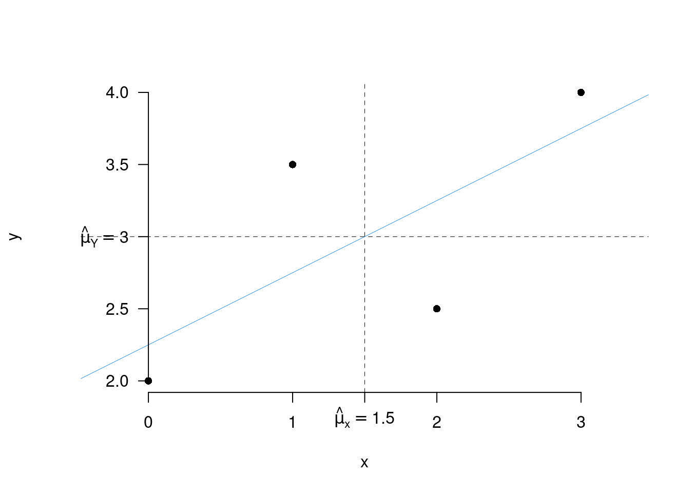
Le previsioni, sulle \(x\) osservate \[\hat y_i=\hat\beta_0+\hat\beta_1x_i\]
Le stime degli errori \[\hat\varepsilon_i = y_i-\hat y_i\]
Valgono le seguenti proprietà:
\[ \begin{aligned} y_i, & & \text{le $y$ osservate}\\ \hat y_i &= \hat \beta_0+\hat\beta_1x_i,&\text{le $y$ stimate}\\ \hat\varepsilon_i &= y_i-\hat y_i,&\text{gli errori stimati}\\ \bar y &= \frac 1 n\sum_{i=1}^n y_i, &\text{la media degli $y$}\\ \bar y &= \frac 1 n\sum_{i=1}^n \hat y_i, &\text{la media degli $\hat y$ coince con qeulla degli $y$}\\ 0 &=\frac 1 n\sum_{i=1}^n\hat\varepsilon_i , &\text{la media degli scarti dalla retta è zero} \end{aligned} \]
17.6 Il coefficiente di Correlazione
Quanto si adatta bene la retta ai punti? \[\begin{alignat*}{4} -\hat\sigma_X\hat\sigma_Y&\leq~\text{cov}(x,y)&\leq& + \hat\sigma_X\hat\sigma_Y&\\ -\frac{\hat\sigma_X\hat\sigma_Y}{\hat\sigma_X\hat\sigma_Y}&\leq\frac{\text{cov}(x,y)}{\hat\sigma_X\hat\sigma_Y}&\leq& +\frac{\hat\sigma_X\hat\sigma_Y}{\hat\sigma_X\hat\sigma_Y}&\\ -1&\leq ~~~~~~~r &\leq& +1& \end{alignat*}\]
Definizione 17.2 Il coefficiente \(r\) \[r=\frac{\text{cov}(x,y)}{\hat\sigma_X\hat\sigma_Y}\] è chiamato coefficiente di correlazione.
Nel nostro esempio \[r=\frac{0.625}{1.118\cdot0.7906}=0.7071\]
\(r\) misura l’associazione lineare ovvero CRESCE in valore assoluto quando i punti SI ADDENSANO intorno alla retta.
17.6.1 Proprietà di \(r\)
- \(-1 \le r \le 1\). Il segno indica la direzione della relazione;
- \(r>0\), al crescere di \(X\), in media, cresce \(Y\);
- \(r<0\), al crescere di \(X\), in media, decresce \(Y\);
- \(r=1\), associazione perfetta diretta;
- \(r=-1\), associazione perfetta indiretta.
- \(r\) è un numero puro, ovvero è privo di unità di misura
- è simmetrico: \(r_{XY} = r_{YX} = r\)
- è invariante per cambiamenti di scala: \[\text{se }W=a+bY,\text{allora }r_{X,W}=\text{sign}(b) r_{XY},\text{ dove la funzione sign}(b)= \begin{cases}+1, &\text{se $b>0$}\\ -1, &\text{se $b<0$} \end{cases}\]
- \(r\) misura l’associazione lineare:
- \(r\) misura come i punti si addensano intorno alla retta.
- \(f(x)\) non lineare \(r\) è parzialmente inutile
- il valore di \(r\), da solo, non è in grado di descrivere tutte le possibili relazioni che si possono realizzare tra due variabili.
- \(r\) è più elevato se i dati sono aggregati in medie o percentuali
1. La prima proprietà ci dice che \(r\) non può mai essere minore di \(-1\) e mai maggiore di \(+1\) per costruzione
\[-1 \le r \le 1\]
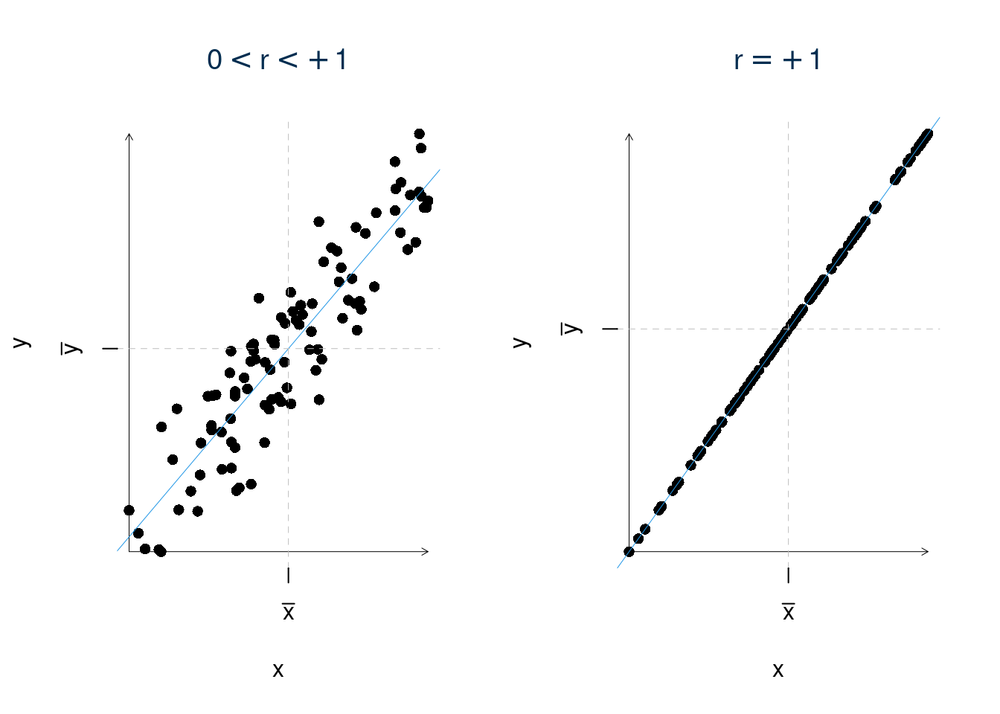
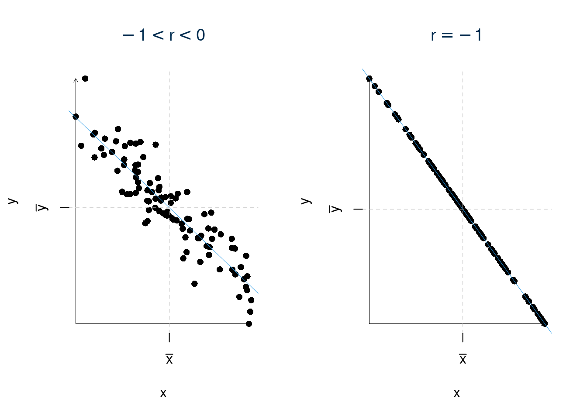
2. La seconda proprietà ci dice che \(r\) non dipende dalla scala di misura delle variabili \(X\) e \(Y\). Mentre la covarianza ha un’unità di misura spuria, prodotto dell’unità di misura della \(x\) (\(u_X\)) e della \(y\) (\(u_Y\)), \(r\) non ha unità di misura perché è un rapporto tra la covarianza che porta l’unità di misura della \(X\) moltiplicata quella della \(Y\) e le standard deviation delle stesse.
\[\begin{eqnarray*} \text{cov}(x,y)&=&\frac 1 n\sum_{i=1}^n{(x_i\cdot u_X-\bar x\cdot u_X)(y_i\cdot u_Y-\bar y\cdot u_Y)}\\ &=&\frac 1 n\sum_{i=1}^n{(x_i-\bar x)u_X(y_i-\bar y)u_Y}\\ &=&\frac 1 n\sum_{i=1}^n{(x_i-\bar x)(y_i-\bar y)u_X\cdot u_Y} \\ &=&\text{cov}(x,y)u_X\cdot u_Y \end{eqnarray*}\]
Le standard deviation sono espresse nell’unità di misura delle variabili
\[\begin{eqnarray*} \hat\sigma_Y &=& \sqrt{\frac 1 n\sum_{i=1}^n{(y_i\cdot u_Y-\bar y\cdot u_Y)^2}}\\ &=& \sqrt{\frac 1 n\sum_{i=1}^n{((y_i-\bar y)u_Y)^2}}\\ &=& \left(\sqrt{\frac 1 n\sum_{i=1}^n{(y_i-\bar y)^2}}\right)u_Y\\ &=& \hat\sigma_Y u_Y\\ \hat\sigma_X &=& \hat\sigma_X u_X \end{eqnarray*}\]
E quindi \(r\) \[r=\frac{\text{cov}(x,y)}{\hat\sigma_X\hat\sigma_Y}=\frac{\text{cov}(x,y)u_X\cdot u_Y}{\hat\sigma_X\cdot u_X\hat\sigma_Y\cdot u_Y}= \frac{\text{cov}(x,y){u_X}\cdot u_Y}{\hat\sigma_X\cdot u_X\hat\sigma_Y\cdot u_Y}\]
3. La terza proprietà deriva direttamente dalla simmetria della covarianza: \[r_{XY}=\frac{\text{cov}(x,y)}{\hat\sigma_X\hat\sigma_Y}=\frac{\text{cov}(y,x)}{\hat\sigma_Y\hat\sigma_X}=r_{YX}\]
4. La quarta proprietà ci dice che, essendo un numero puro, \(r\), non dipende dalle unità di misura di \(X\) ed \(Y\) e quindi cambiarla non comporta alterazioni su \(r\).
\[\text{se }W=a+bY,\text{allora }r_{X,W}=\text{sign}(b) r_{XY},\text{ dove la funzione sign}(b)= \begin{cases}+1, &\text{se $b>0$}\\ -1, &\text{se $b<0$} \end{cases}\]
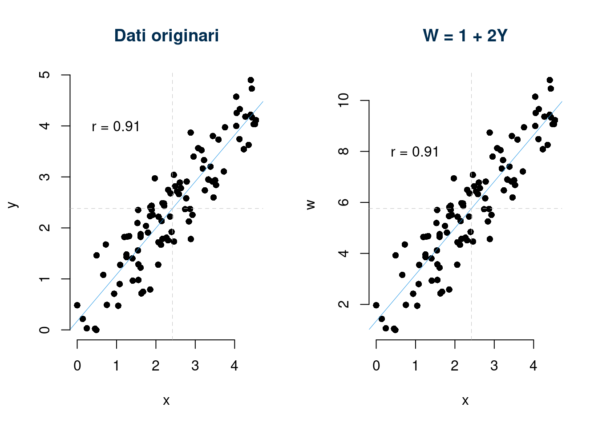
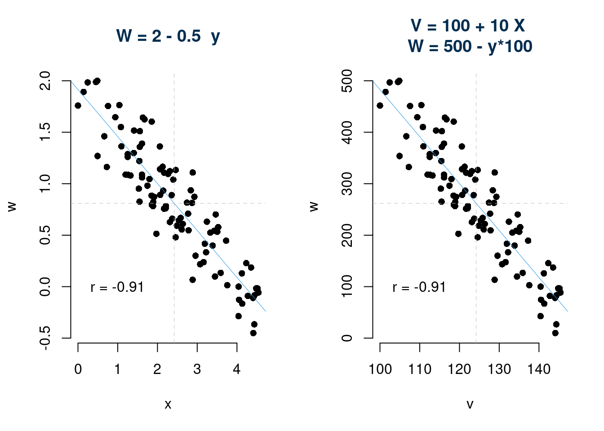
5. La quinta proprietà dice che \(r\) misura l’associazione lineare, ovvero Il coefficiente di correlazione \(r\) è una misura della distanza dei punti da una retta.
- \(r\) misura come i punti si addensano intorno alla retta.
- \(f(x)\) non lineare \(r\) è parzialmente inutile
- il valore di \(r\), da solo, non è in grado di descrivere tutte le possibili relazioni che si possono realizzare tra due variabili.
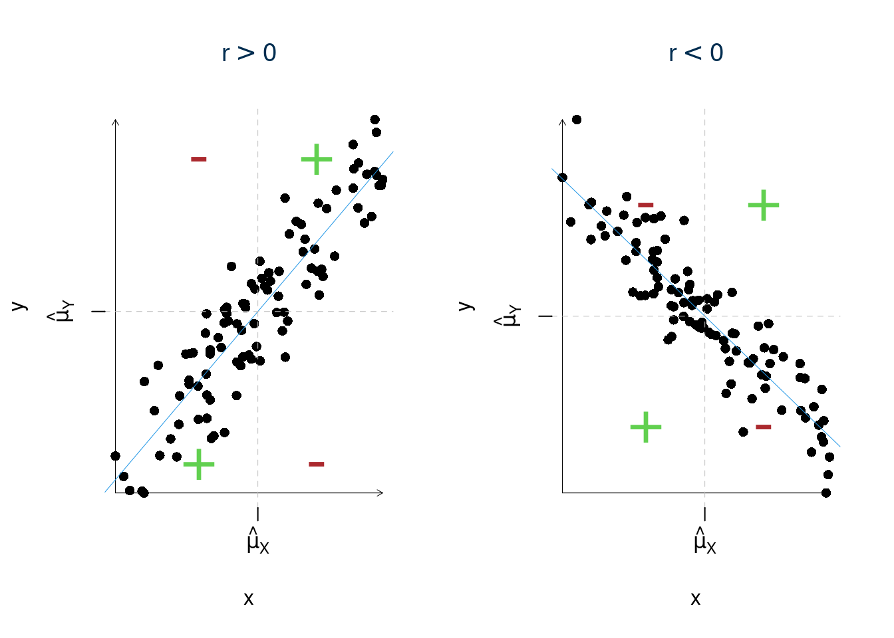
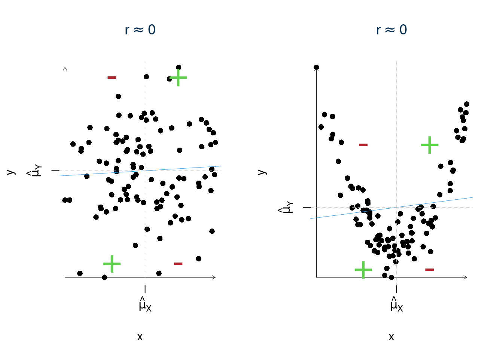
6. Infine \(r\) è più elevato se i dati sono aggregati in medie o percentuali. Infatti se aggreghiamo, come nell’esempio qui sotto, i dati di tre paesi nelle loro medie, diminuiamo la variabilità.
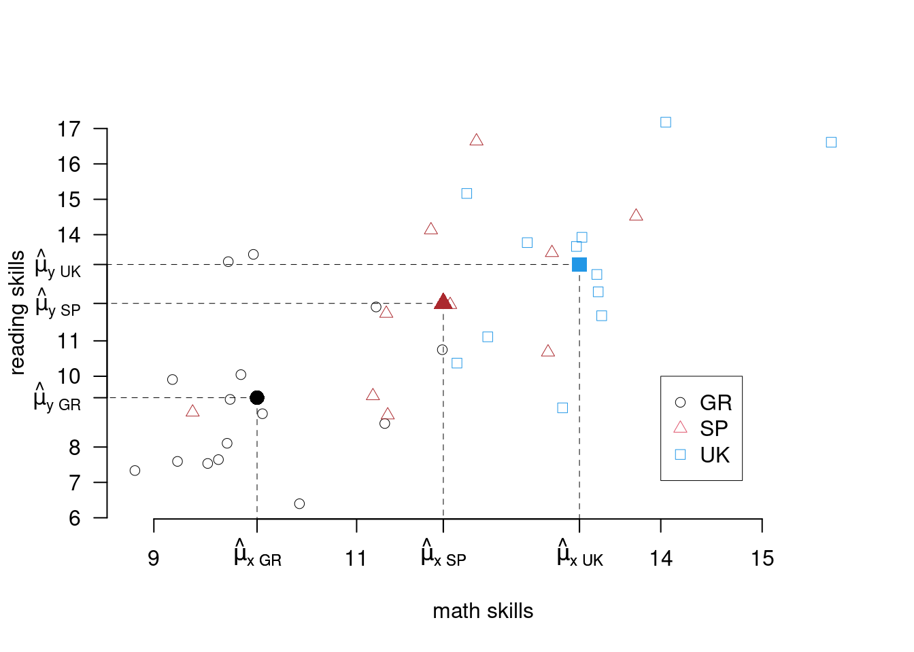
L’indice \(r\) calcolato su tutti i dati è \[r = 0.7056\]
L’indice \(r\) calcolato sulle tre medie è \[r_{\text{Medie}} = 0.9893\]
17.7 Scomposizione della varianza
La scomposizione della varianza ci offre un quadro teorico per comprendere come la variabilità iniziale della variabile di interesse \(Y\) sia scomponibile in due pezzi: la variabilità spiegata dal modello e quella residua (casuale).
Ricordiamo che: \[\begin{aligned} y_i &\phantom{=}\text{ dati } &\hat y_i &= \hat \beta_0+\hat\beta_1x_i,& \hat\varepsilon_i &= y_i-\hat y_i\\ \bar y &= \frac 1 n\sum_{i=1}^n y_i,& \bar y &= \frac 1 n\sum_{i=1}^n \hat y_i & 0 &=\frac 1 n\sum_{i=1}^n\hat\varepsilon_i \end{aligned}\]
Definizione 17.3 (Varianza Totale, Varianza Spiegata e Varianza Residua) La varianza di \(y\) (senza osservare \(x\)) è \[\hat\sigma_Y^2=\frac{\sum_{i=1}^n(y_i-\bar y)^2}n=\frac{TSS}{n},\qquad\text{$TSS$ Total Sum of Squares}\]
La varianza di \(\hat y\) è \[\hat\sigma_{\hat Y}^2=\frac{\sum_{i=1}^n(\hat y_i-\bar y)^2}n=\frac{ESS}{n},\qquad\text{$ESS$ Explained Sum of Squares}\]
La varianza di \(\hat \varepsilon\) è \[\hat\sigma_{\varepsilon}^2=\frac{\sum_{i=1}^n(\hat \varepsilon_i-0)^2}n=\frac{\sum_{i=1}^n\hat \varepsilon_i^2}n=\frac{RSS}{n},\qquad\text{$RSS$ Residual Sum of Squares}\]
Proprietà 17.3 Vale la seguente relazione \[TSS = ESS + RSS\]
La variabilità totale di \(y\) (quella osservata senza \(x\)) e scomponibile nella somma di due parti
\[ \left\{\begin{array}{cc} \text{varibilità di $y$}\\ \text{intorno alla sua media} \end{array}\right\} = \left\{\begin{array}{cc} \text{varibilità della retta}\\ \text{intorno alla media} \end{array}\right\} + \left\{\begin{array}{cc} \text{varibilità delle $y$}\\ \text{intorno alla retta} \end{array} \right\} \]
Dividendo ogni membro per \(TSS\), si ottiene \[\begin{eqnarray*} TSS &=& ESS + RSS \\ \frac{TSS}{TSS} &=& \frac{ESS}{TSS} + \frac{RSS}{TSS}\\ 1 &=& \frac{ESS}{TSS} + \frac{RSS}{TSS}\\ \frac{RSS}{TSS} &=& 1 - \frac{ESS}{TSS}\\ \frac{RSS}{TSS} &=& 1- r^2,\quad r^2=\frac{ESS}{TSS} \end{eqnarray*}\]
17.8 Il coefficiente di determinazione lineare \(R^2\)
È un indicatore sintetico che indica la quota di varianza spiegata dal modello. Nel caso della regressione lineare semplice
Definizione 17.4 (Indice di Determinazione Lineare) Si definisce \[R^2=\left(\frac{ESS}{TSS}\right)=r^2=\left(\frac{\text{cov}(x,y)}{\hat\sigma_x\hat\sigma_y}\right)^2\] l’indice di determinazione lineare ed è, nel contesto della regressione lineare semplice, il quadrato dell’indice di correlazione \[0\leq R^2\leq 1\]
Se \(R^2=1\), allora \(r=-1\) oppure \(r=+1\), associazione lineare perfetta, 100% della variabilità spiegata, se \(R^2=0\), allora \(r=0\) associazione lineare nulla, 0% della variabilità spiegata, se \(R^2>0.75\), allora considereremo l’associazione lineare soddisfacente.
17.8.1 Interpretazione di \(r^2\)
La variabilità di \(y\) viene scomposta in due, la componente spiegata dalla retta e della residua. Caso limite uno: la retta spiega tutta la variabilità di \(y\): \[TSS = ESS\Rightarrow RSS=0\Rightarrow r^2=1\] i punti sono allineati su una retta
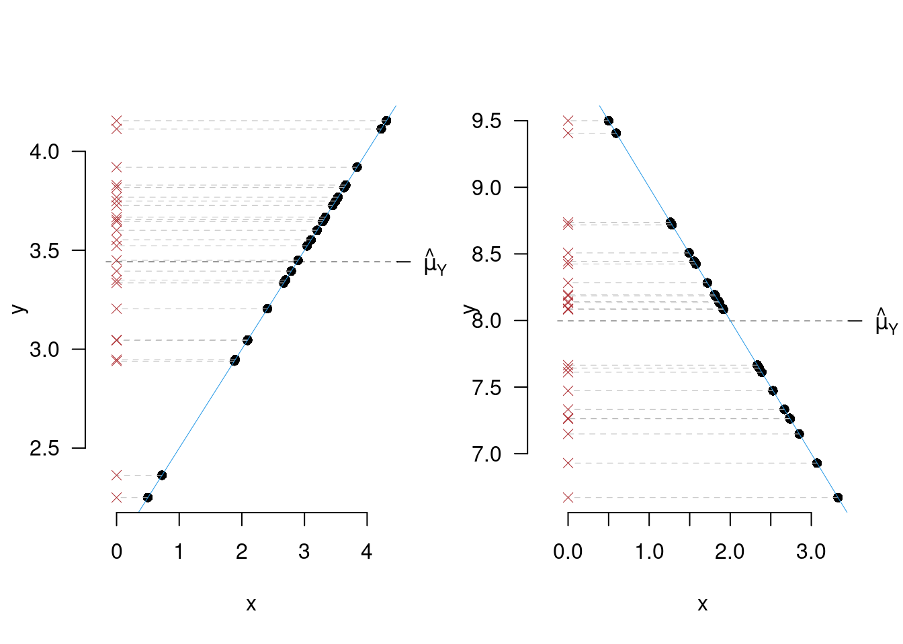
Se la retta è in grado di assorbire tutta la variabilità di \(y\) significa che tutti i punti sono allineati sul di essa.
Caso limite due: la retta non spiega nulla della variabilità di \(y\) \[TSS = RSS\Rightarrow ESS=0\Rightarrow r^2=0\] la retta è orizzontale e coincide con \(\hat\mu_Y\)
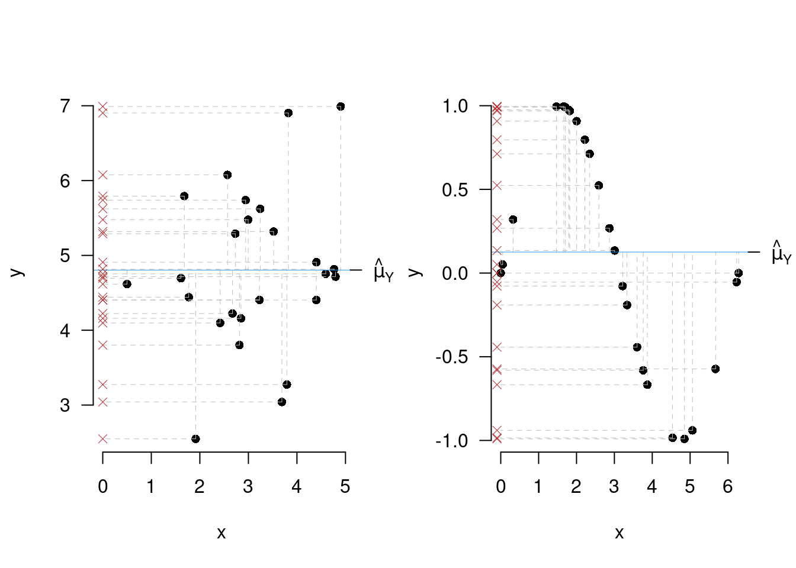
Se la retta è parallela all’asse dell \(x\) non spiega nulla della variabilità di \(y\).
17.8.2 Scomposizione della varianza sui dati di esempio
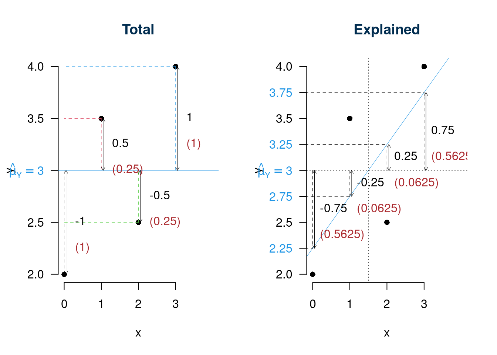
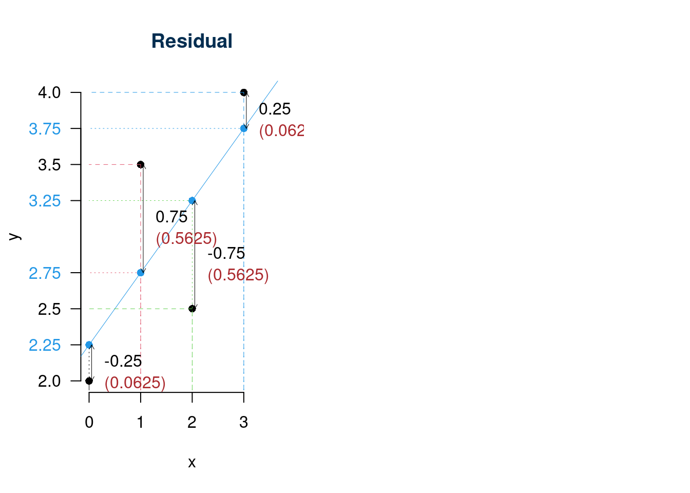
| \(i\) | \((y_i-\bar y)^2\) | \((\hat y_i-\bar y)^2\) | \(\hat \varepsilon_i^2\) |
|---|---|---|---|
| 1 | 1.00 | 0.5625 | 0.0625 |
| 2 | 0.25 | 0.0625 | 0.5625 |
| 3 | 0.25 | 0.0625 | 0.5625 |
| 4 | 1.00 | 0.5625 | 0.0625 |
| Totale | 2.50 | 1.2500 | 1.2500 |
\[\begin{eqnarray*} TSS &=& ESS + RSS \\ 2.5&=&1.25+1.25\\ \frac{RSS}{TSS} &=& 1- r^2\\ \frac{1.25}{2.5} &=& 1- 0.7071^2\\ 0.5 &=& 1- 0.5 \end{eqnarray*}\]
Ovvero la retta di regressione di \(y\) dato \(x\) spiega il 50% della variabilità totale della y.
Osservazione. Se volessi studiare la relazione tra \(X\) e \(W\) nella tabella qui sotto:
| \(i\) | \(x_i\) | \(y_i\) | \(w_i\) |
|---|---|---|---|
| 1 | 0 | 2.0 | 4.0 |
| 2 | 1 | 3.5 | 2.0 |
| 3 | 2 | 2.5 | 2.5 |
| 4 | 3 | 4.0 | 3.5 |
| Totale | 6 | 12.0 | 12.0 |
Osservo dapprima Le variabili \(y\) e \(w\) hanno la stessa media e la stessa varianza, infatti \(\sum_i y_i = \sum_i w_i=12\) e \(\sum_i y_i^2=\sum_i w_i^2=38.5\). Se osservati rispetto ai soli valori, in ipotesi IID, sono fenomeni indistinguibili.
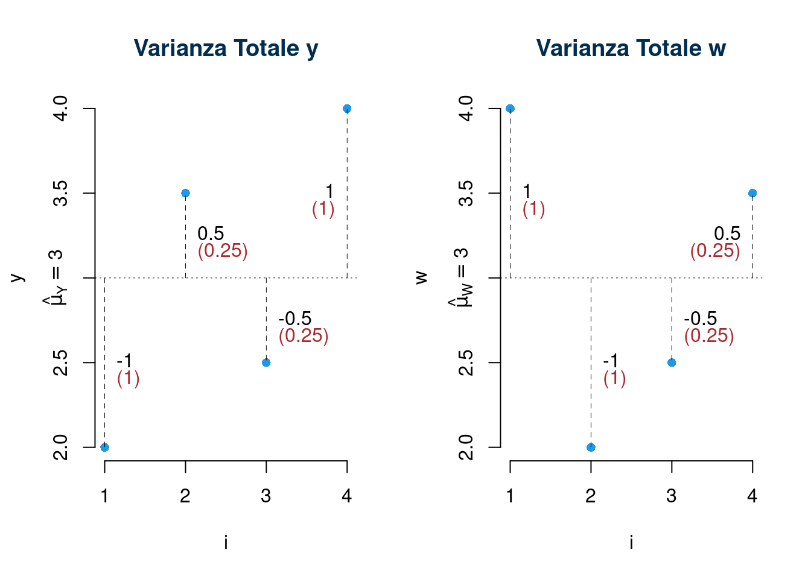
La varianza di \(y\) è dunque \[\hat\sigma_Y^2=\frac 1 n\sum_i (y_i - \bar y)^2 =\frac 1 n\sum_i y_i^2 - \bar y^2 =9.625 - (3)^2=0.625\] e quella di \(w\) \[\hat\sigma_W^2=\frac 1 n\sum_i (w_i - \bar w)^2 =\frac 1 n\sum_i w_i^2 - \bar w^2 =9.625 - (3)^2=0.625\]
Ma la variabile \(X\) non spiega nello stesso modo \(Y\) e \(W\). Infatti se osserviamo la relazione tra \(x\) ed \(Y\) e la relazione tra \(x\) e \(w\) ci accorgiamo che i fenomeni sono diversi.
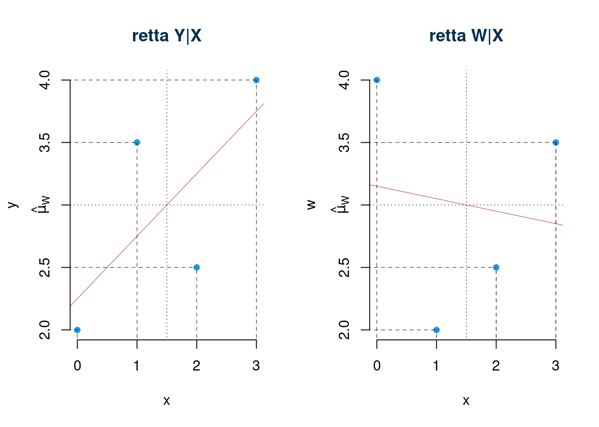
- La retta \(y|x\) assorbe il 50% della variabilità di \(y\)
- La retta \(w|x\) assorbe il 2% della variabilità di \(w\)
17.9 Stima di \(\sigma_\varepsilon^2\)
Il parametro \(\sigma_\varepsilon^2\) rappresenta la variabilità dei punti intorno alla retta. La stima di \(\sigma_\varepsilon^2\) deriva dalla scomposizione della varianza \[\begin{eqnarray*} \frac{RSS}{TSS} &=& 1-r^2 \\ RSS &=& TSS(1-r^2)\\ \frac{RSS}{n} &=& \frac{TSS}{n}(1-r^2) \\ \hat\sigma_\varepsilon^2 &=& \hat\sigma_Y^2(1-r^2) \end{eqnarray*}\]
In modo analogo alla stima di \(\sigma^2\) in un modello normale, \(\hat\sigma_\varepsilon^2\) non è stima corretta di \(\sigma_\varepsilon^2\) e si dimostra che \[E(\hat\sigma_\varepsilon^2)=\frac{n-2}n \sigma_\varepsilon^2\] si quindi corregge con: \[S_\varepsilon^2=\frac n{n-2}\hat\sigma_\varepsilon^2\]
17.10 Statistiche Sufficienti del Modello di Reegressione
Se l’ipotesi di normalità dei residui viene ritenuta valida si può dimostrare che le stime di massima verosimiglianza per \(\beta_0\), \(\beta_1\) e \(\sigma_\varepsilon^2\) coincidono con quelle dei minimi quadrati \(\hat\beta_0\), \(\hat\beta_1\) e \(\hat\sigma_\varepsilon^2\). Tutta l’informazione sul modello di regressione lineare semplice è contenuta nelle seguenti statistiche \[\sum_{i=1}^n x_i,~~\sum_{i=1}^n y_i,~~\sum_{i=1}^n x_i^2,~~\sum_{i=1}^ny_i^2,~~ \sum_{i=1}^n x_i y_i\]
| \(i\) | \(x_i\) | \(y_i\) | \(x_i^2\) | \(y_i^2\) | \(x_i\cdot y_i\) |
|---|---|---|---|---|---|
| 1 | 0.0 | 2.0 | 0.0 | 4.000 | 0.000 |
| 2 | 1.0 | 3.5 | 1.0 | 12.250 | 3.500 |
| 3 | 2.0 | 2.5 | 4.0 | 6.250 | 5.000 |
| 4 | 3.0 | 4.0 | 9.0 | 16.000 | 12.000 |
| Totale | 6.0 | 12.0 | 14.0 | 38.500 | 20.500 |
| Totale/n | 1.5 | 3.0 | 3.5 | 9.625 | 5.125 |
Ricapitolando nel nostro esempio: \[\begin{alignat*}{3} \bar x & = \frac 1 n \sum_{i=1}^n x_i = 1.5 & \hat\sigma_X^2 & = \frac 1 n \sum_{i=1}^n x_i^2 - \bar x^2 = 1.25 &\\ \bar y & = \frac 1 n \sum_{i=1}^n y_i = 3 & \hat\sigma_Y^2 & = \frac 1 n \sum_{i=1}^n y_i^2 - \bar y^2 = 0.625 &\\ \text{cov}(x,y) & = \frac 1 n \sum_{i=1}^n x_iy_i -\bar x\bar y = 0.625 & r & = \frac{\text{cov}(x,y)}{\hat\sigma_X \hat\sigma_Y } = 0.7071 &\\ \hat\beta_1 & = \frac{\text{cov}(x,y)}{\hat\sigma_X^2} = 0.5 & \hat\beta_0 & = \bar y - \hat\beta_1\bar x = 2.25. &\\ \hat\sigma_\varepsilon^2 & = \hat\sigma_Y^2(1-r^2)=0.3125 & S_\varepsilon^2 & = \frac{n}{n-2}\hat\sigma_\varepsilon^2 = 0.625\\ \hat\sigma_\varepsilon & = \hat\sigma_Y\sqrt{(1-r^2)}=0.559 & \qquad S_\varepsilon & = \sqrt{\frac{n}{n-2}}\hat\sigma_\varepsilon = 0.7906\\ \end{alignat*}\]